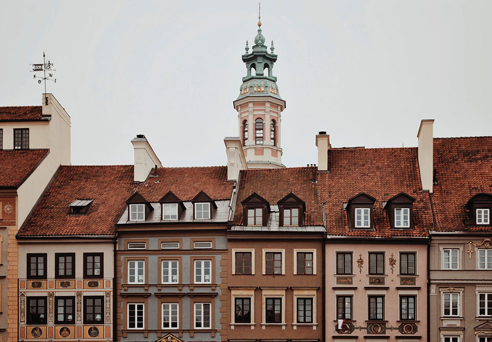
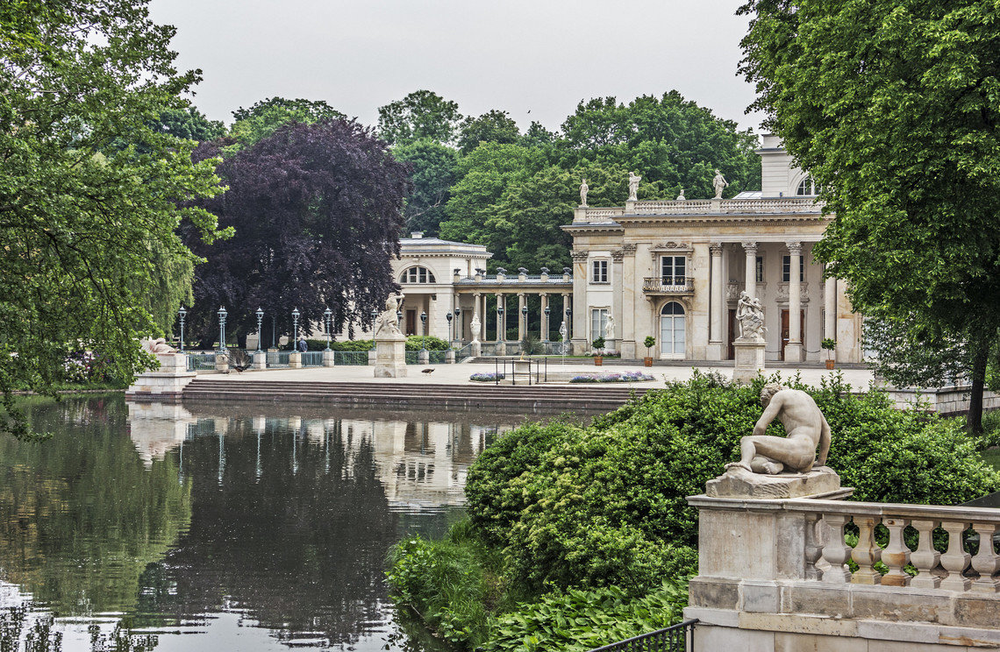
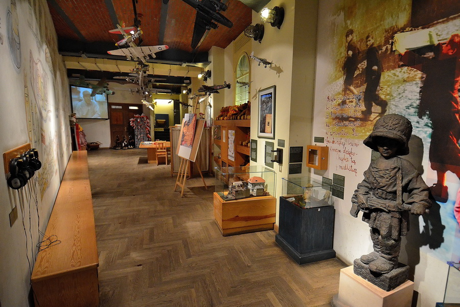
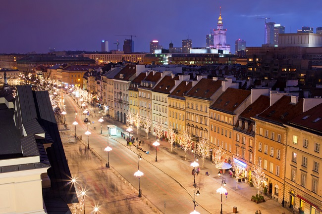
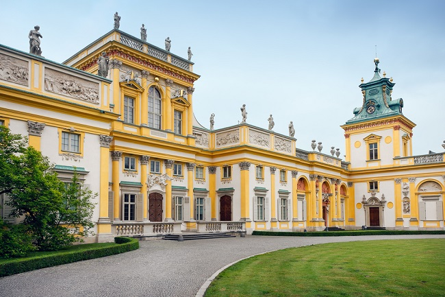
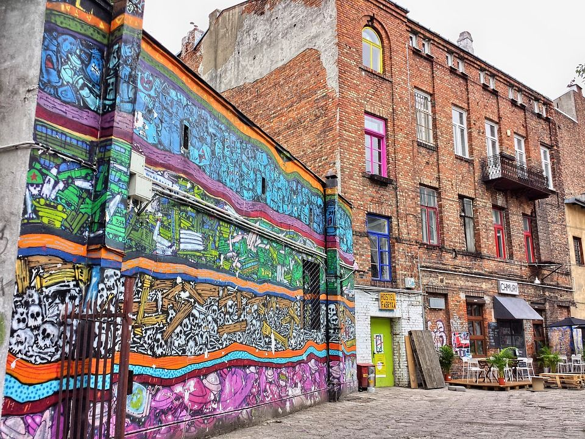
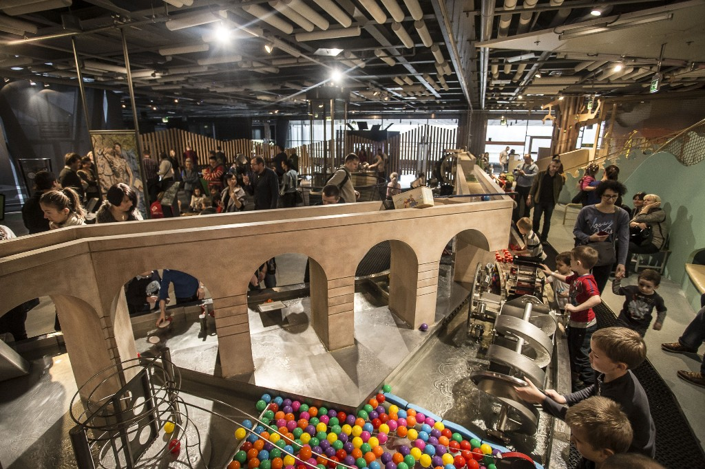
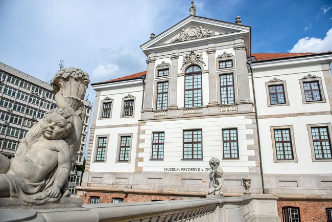
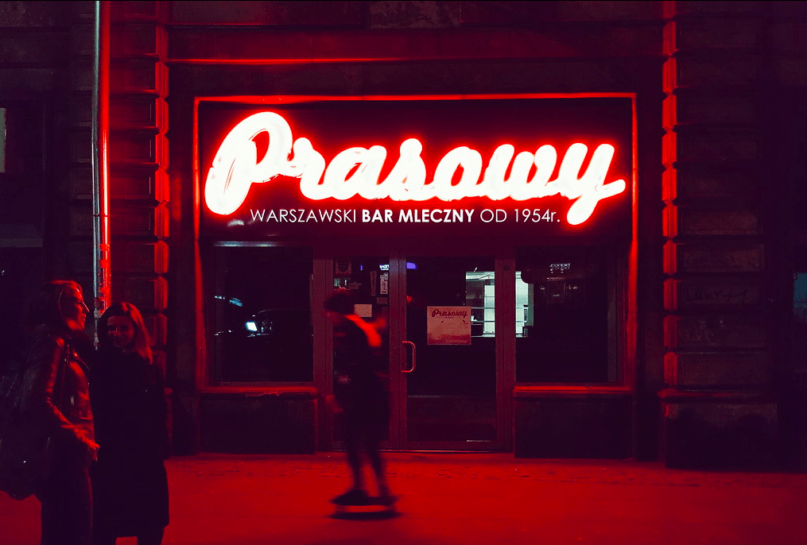

На перший погляд Варшава здається великим та безликим містом. Насправді, це є найбільше місто Польщі з майже 2 мільйонами жителів. Під час Другої світової війни Варшава була повністю зруйнована нацистами, але згодом Польська столиця до дрібного камінчика була відбудована. В рамках нашої рубрики Міні-гіди, розповідаємо про найкращі місця Варшави для відвідування туристами-початківцями.
1.Відкрийте для себе Старе місто
Фото Chernetskyi
Це чудове місце для піших прогулянок. Саме тут, ви маєте змогу відпочити від шуму та від бурхливого життя у великому місті. Це місце притягує туристів своїми химерними будинками, тихими провулками, жвавими площами, гостиними ресторанами та почуттям історії, попри те, що Старе місто було повністю перебудоване після Другої світової війни. В теплу пору року, на міських площах відбуваються різні регулярні заходи, та навіть арт-галереї просто неба.
Корисно знати: Саме історія робить це місце цікавим та привабливим. Дізнатися про це, ви можете під час безкоштовної пішої прогулянки.
2. Здійсніть прогулянку Королівськими стежками
Сьогодні у Європі досить мало подібних парків, які могли би похизуватись красою та безтурботністю, якою володіє палацо-парковий комплекс Королівські Лазенки. У парку є все, що можна очікувати від найкращого міського парку, включаючи недоторкане озеро, величну резиденцію, палац на воді та навіть оранжерею.
Корисно знати: В літній період, на території парку, проходять безкоштовні концерти з виконанням композицій Фредеріка Шопена.
3. Відвідайте музей Варшавського повстання
Повстання 1944-го року є однією із найважливіших подій в польській та європейській історії, саме в музеї Варшавського повстання вам краще розкажуть про це. Під час відвідування музею, ви дізнаєтесь про минуле та сьогодення міста в історичному контексті.
Корисно знати: Щонеділі вхід до музею безкоштовний.
4. Здійсніть прогулянку Королівським маршрутом
Королівський маршрут розпочинається з Королівського замку Варшави. Відчуйте королівську атмосферу Варшави, здійснивши прогулянку по брукованій доріжці. Прямуючи до Президентського палацу, завітайте до середини розкішного готелю “Бристоль” та прогуляйтесь однією з найстаріших вулиць Варшави “Новий Світ” (Nowy Świat), де ви побачите цікаве поєднання сучасної та старовинної архітектури. Якщо ж ви шукаєте магазини з висококласною продукцією, відправляйтеся на Площу трьох хрестів. Продовжуйте далі свій маршрут до великої пластикової пальми та врешті-решт до Королівського палацу.
Корисно знати: Якщо ж ви бажаєте відпочити під час прогулянки Королівським маршрутом та спробувати смачну запашну каву, вирушайте на вулицю Фоксал, де знаходиться велика кількість затишних кав’ярень.
5. Відвідайте Королівський палац
Під час прогулянки Королівським маршрутом, відвідайте розкішний Королівський палац у Вілянові. Протягом багатьох років, палац переходив з рук в руки, а також знаходився під впливом багатьох епох, які формували стиль палацу, додаючи йому інтригуючого дизайну. В середині палацу знаходиться музей плакатів, який слід відвідати. Не слід оминати увагою і сади, які знаходяться ззовні.
Корисно знати: Якщо у вас немає часу, щоб відвідати палац зсередини, то ви можете заплатити 5 злотих та увійти до парку.
6. Відправляйтесь до жвавого району Праги у Варшаві
Колись район Праги у Варшаві вважався забороненим для багатьох жителів та гостей міста. Але на сьогодні це є центр культурного життя Варшави, де поєднується креативність, творчість та активна діяльність. Під час війни ця частина міста була частково недоторканою, тому тут збереглось багато класичних будівель, в яких зараз знаходяться клуби, бари, кафе та музеї. Також не забудьте відвідати Soho Factory (арт-платформа) та Ринок Ружицького (Bazar Różyckiego) – найстаріший ринок Варшави.
Корисно знати: У теплі літні місяці ви можете відвідати концерти просто неба в Празькому та Скаришевському парку. У теплі літні місяці ви можете відвідати концерти просто неба в Празькому та Скаришевському парку.
7. Отримайте відповідь на ваші наукові запитання
Науковий центр Коперника є однією з новітніх пам’яток Варшави. Це ідеальне місце для того, щоб відпочити від міського шуму та відкрити для себе певні наукові явища через інтерактивні експонати. Науковий центр Коперника знаходиться біля мальовничої річки Вісла. Центр пропонує своїм відвідувачам у цікавий та захоплюючий спосіб провести свій день як дітлахам, так і дорослим.
Корисно знати: Не втратьте нагоду відвідати планетарій музею Коперника. Саме тут регулярно проходять шоу на сферичних екранах, які оточують глядача з обох сторін, вони допоможуть вам занурятись у фантастичну подорож Сонячною системою.
8. Відвідайте музей Шопена у Варшаві
Саме Варшава є місцем народження всесвітньо відомого композитора та піаніста Фредеріка Франсуа Шопена. Ви часто будете чути про цю видатну людину під час вашої подорожі Варшавою, тому вам варто зануритися в історію цього знаменитого музиканта. Музей Шопена проведе вас через життя композитора. В музеї представлені оригінальні фотографії, рукописи та деякі з його ранніх записів.
Корисно знати: Ви є палким прихильником творчості Шопена? У вас є можливість відвідати церкву Святого Хреста, де зберігається серце композитора.
9. Відчуйте смак Польщі у молочному барі
Сьогодні Варшава є яскравим та привабливим містом, але так було не завжди. Польща пережила не простий період скрути та економічної кризи. Якщо ж ви бажаєте зануритись в минулі часи, вирушайте до одного з численних “mleczny” або молочних барів міста. Саме там ви знайдете дешеву та по домашньому смачну їжу. Унікальний інтер’єр також здивує вас.
Корисно знати: Велика кількість молочних барів не мають англійського меню та англомовного персоналу. Нехай це вас не зупиняє. Ви не помилитесь з вибором страви, вказуючи на будь-яку страву з меню.Корисно знати: Велика кількість молочних барів не мають англійського меню та англомовного персоналу. Нехай це вас не зупиняє. Ви не помилитесь з вибором страви, вказуючи на будь-яку страву з меню.
Польська столиця — це захоплююче місто, яке протягом багатьох років наполегливо боролось та працювало, щоб відійти від свого похмурого минулого. Це стало можливим завдяки новому поколінню молодих жителів, сповнених ентузіазму та клопіткій праці місцевих чиновників у сфері туризму. Це ідеальне місто для короткотривалої подорожі на кілька днів.